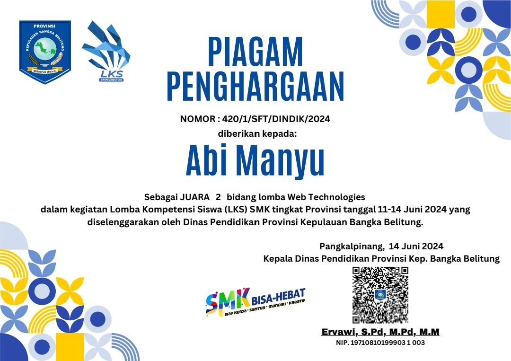

LKS WEB TECHNO 2024
Dalam ajang Lomba Kompetensi Siswa tingkat Provinsi tahun 2024, saya berhasil meraih juara 2 dalam bidang Web Development. Proyek ini berfokus pada pembuatan sistem informasi berbasis web yang memanfaatkan HTML, CSS, JavaScript, PHP, dan menggunakan beberapa framework yang populer seperti Laravel dan React, bahkan menggunakan Wordpress sebagai platform CMS.
← Kembali